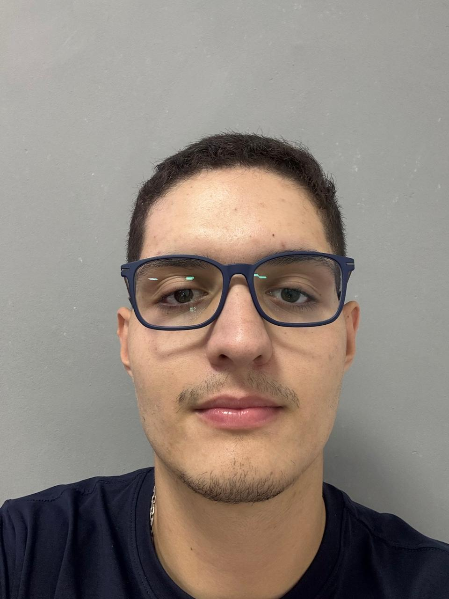

João Espeleta
Responsável por análise técnica e proteção de sistemas.
A ShieldCore nasceu da união de cinco pessoas que acreditavam que pequenas e médias empresas também merecem proteção contra ataques cibernéticos.
A empresa começou em 2026, quando cinco estudantes perceberam que muitos negócios usavam tecnologia todos os dias, mas não tinham orientação para se proteger contra golpes, invasões, roubo de dados e ataques cibernéticos.
A partir dessa observação, o grupo decidiu criar a ShieldCore: uma empresa focada em cibersegurança acessível para pequenas e médias empresas. Cada fundador trouxe uma habilidade diferente, como análise de riscos, redes, atendimento, educação digital, dados e planejamento de incidentes.
A história da ShieldCore representa uma ideia importante: proteger uma empresa não depende apenas de ferramentas caras, mas de informação, organização e boas práticas aplicadas todos os dias.

Responsável por análise técnica e proteção de sistemas.

Criou materiais claros para treinamentos de segurança.

Organizou processos de prevenção e resposta a incidentes.

Ficou responsável por atendimento e orientação aos clientes.

Trabalhou com monitoramento, dados e relatórios de risco.
O grupo definiu que a ShieldCore ajudaria pequenas e médias empresas a entender seus riscos digitais e criar uma base de proteção.
Depois surgiram propostas de diagnóstico de segurança, treinamento contra phishing, backups seguros e planos de resposta.
A missão da empresa passou a ser aproximar pequenos negócios da cibersegurança, sempre com orientações úteis e fáceis de entender.